Kreiranje i uređivanje pivot tabela
Pivot tabele vam omogućavaju da grupišete i organizujete podatke iz velikih skupova podataka kako biste dobili sažete informacije. U Spreadsheet Editor-u možete reorganizovati podatke na mnogo različitih načina kako biste prikazali samo potrebne informacije i fokusirali se na važne aspekte.
Kreiranje nove pivot tabele
Da biste kreirali pivot tabelu,
- Pripremite izvorni skup podataka koji želite da koristite za kreiranje pivot tabele. Treba da sadrži zaglavlja kolona. Skup podataka ne sme da sadrži prazne redove ili kolone.
- Izaberite bilo koju ćeliju unutar opsega izvornih podataka.
-
Pređite na karticu Pivot Table na gornjoj alatnoj traci i kliknite na ikonu Insert Table .
Ako želite da kreirate pivot tabelu na osnovu formatirane tabele, možete koristiti i opciju Insert pivot table na kartici Table settings na desnoj bočnoj traci.
-
Pojaviće se prozor Create Pivot Table.
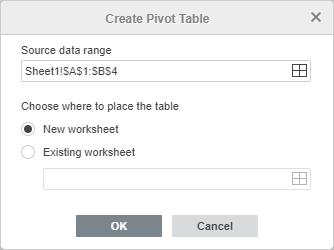
- Source data range je već naveden. U ovom slučaju biće korišćeni svi podaci iz izvornog opsega podataka. Ako želite da promenite opseg podataka (npr. da uključite samo deo izvornih podataka), kliknite na ikonu . U prozoru Select Data Range unesite potrebni opseg podataka u sledećem formatu: Sheet1!$A$1:$E$10. Takođe možete mišem izabrati potreban opseg ćelija na radnom listu. Kada završite, kliknite na OK.
-
Odredite gde želite da postavite pivot tabelu.
- Opcija New worksheet je podrazumevano izabrana. Omogućava vam da postavite pivot tabelu na novi radni list.
-
Takođe možete izabrati opciju Existing worksheet i odabrati određenu ćeliju. U tom slučaju, izabrana ćelija će biti gornja desna ćelija kreirane pivot tabele. Da biste izabrali ćeliju, kliknite na ikonu .
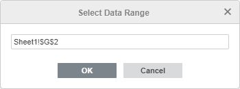
U prozoru Select Data Range unesite adresu ćelije u sledećem formatu: Sheet1!$G$2. Takođe možete kliknuti na potrebnu ćeliju na radnom listu. Kada završite, kliknite na OK.
- Kada izaberete lokaciju pivot tabele, kliknite na OK u prozoru Create Table.
Prazna pivot tabela će biti ubačena na izabranu lokaciju.
Kartica Pivot table settings na desnoj bočnoj traci će biti otvorena. Ovu karticu možete sakriti ili prikazati klikom na ikonu . Podešavanja pivot tabele su takođe dostupna u kontekstnom meniju koji se pojavljuje kada kliknete desnim tasterom miša na tabelu. Opcije kontekstnog menija zavise od polja na koje kliknete.
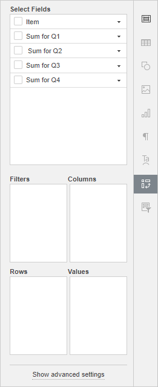
Izaberite polja za prikaz
Odeljak Select Fields sadrži polja nazvana prema zaglavljima kolona u vašem izvornom skupu podataka. Svako polje sadrži vrednosti iz odgovarajuće kolone izvorne tabele. Sledeća četiri odeljka su dostupna ispod: Filters, Columns, Rows i Values.
Označite polja koja želite da prikažete u pivot tabeli. Kada označite polje, ono će biti dodato u jedan od dostupnih odeljaka na desnoj bočnoj traci u zavisnosti od tipa podataka i biće prikazano u pivot tabeli. Polja koja sadrže tekstualne vrednosti biće dodata u odeljak Rows, dok će polja koja sadrže numeričke vrednosti biti dodata u odeljak Values.
Možete jednostavno prevlačiti polja u potrebni odeljak, kao i prevlačiti ih između odeljaka radi brze reorganizacije pivot tabele. Da biste uklonili polje iz trenutnog odeljka, prevucite ga van tog odeljka.
Da biste dodali polje u potrebni odeljak, možete i kliknuti na crnu strelicu desno od polja u odeljku Select Fields i izabrati odgovarajuću opciju iz menija: Add to Filters, Add to Rows, Add to Columns, Add to Values.
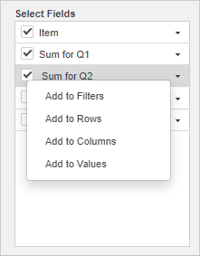
Ispod možete videti nekoliko primera korišćenja odeljaka Filters, Columns, Rows i Values.
-
Ako dodate polje u odeljak Filters, iznad pivot tabele biće dodat poseban filter. On će biti primenjen na celu pivot tabelu. Ako kliknete na padajuću strelicu u dodatom filteru, videćete vrednosti iz izabranog polja. Kada isključite (odčekirate) neke vrednosti u prozoru opcija filtera i kliknete na OK, odčekirane vrednosti neće biti prikazane u pivot tabeli.
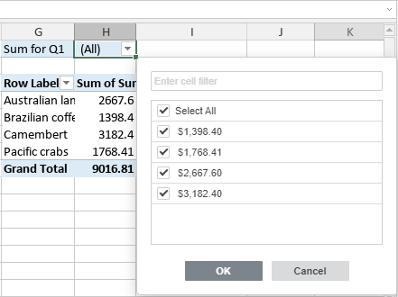
-
Ako dodate polje u odeljak Columns, pivot tabela će sadržati broj kolona jednak broju vrednosti iz izabranog polja. Takođe će biti dodata i kolona Grand Total.
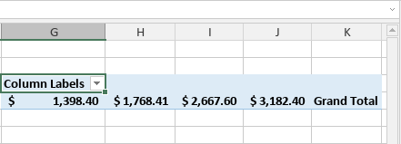
-
Ako dodate polje u odeljak Rows, pivot tabela će sadržati broj redova jednak broju vrednosti iz izabranog polja. Takođe će biti dodat i red Grand Total.
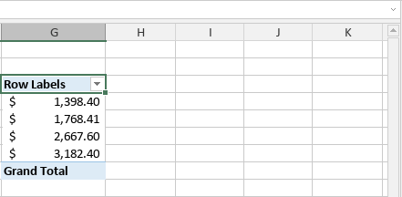
-
Ako dodate polje u odeljak Values, pivot tabela će prikazati zbirnu vrednost za sve numeričke vrednosti iz izabranog polja. Ako polje sadrži tekstualne vrednosti, biće prikazan broj vrednosti. Funkcija koja se koristi za izračunavanje zbirne vrednosti može se promeniti u podešavanjima polja.
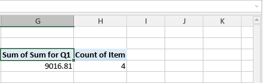
Da biste videli više informacija o bilo kom polju vrednosti, kliknite na njega desnim tasterom miša da otvorite kontekstni meni i izaberite opciju Show details, ili dvaput kliknite na traženo polje vrednosti levim tasterom miša. Podaci na kojima se zasniva polje vrednosti otvoriće se na novom listu.
Preuređivanje polja i podešavanje njihovih svojstava
Kada su polja dodata u potrebne odeljke, možete njima upravljati kako biste promenili raspored i format pivot tabele. Kliknite na crnu strelicu desno od polja u odeljcima Filters, Columns, Rows ili Values da biste otvorili kontekstni meni polja.
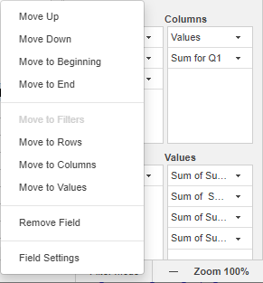
Omogućava vam da:
- Premestite izabrano polje Gore, Dole, na Početak ili na Kraj trenutnog odeljka, ako ste u taj odeljak dodali više od jednog polja.
- Premestite izabrano polje u drugi odeljak — u Filters, Columns, Rows ili Values. Opcija koja odgovara trenutnom odeljku biće onemogućena.
- Uklonite izabrano polje iz trenutnog odeljka.
- Podesite settings (podešavanja) izabranog polja.
Podešavanja polja Filters, Columns i Rows izgledaju slično:
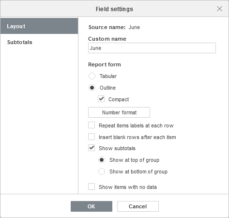
Kartica Layout sadrži sledeće opcije:
- Opcija Source name omogućava da vidite naziv polja koji odgovara zaglavlju kolone iz izvornog skupa podataka.
- Opcija Custom name omogućava da promenite naziv izabranog polja prikazan u pivot tabeli.
-
Odeljak Report Form omogućava da promenite način na koji se izabrano polje prikazuje u pivot tabeli:
-
Izaberite potreban raspored za izabrano polje u pivot tabeli:
- Oblik Tabular prikazuje jednu kolonu za svako polje i obezbeđuje prostor za zaglavlja polja.
- Oblik Outline prikazuje jednu kolonu za svako polje i obezbeđuje prostor za zaglavlja polja. Takođe omogućava prikaz međuzbirova na vrhu grupa.
- Oblik Compact prikazuje stavke iz različitih polja odeljka Rows u jednoj koloni.
- Opcija Number format omogućava da izaberete potreban format broja za polje vrednosti. Kliknite na ovo dugme, izaberite željeni format sa liste Category, a zatim kliknite na OK kada završite. Da biste saznali više o formatima brojeva, pogledajte sledeći članak.
- Opcija Repeat items labels at each row omogućava da vizuelno grupišete redove ili kolone zajedno ako imate više polja u tabularnom prikazu.
- Opcija Insert blank rows after each item omogućava da dodate prazne redove nakon stavki izabranog polja.
- Opcija Show subtotals omogućava da izaberete da li želite da prikažete međuzbirove za izabrano polje. Možete izabrati jednu od opcija: Show at top of group ili Show at bottom of group.
- Opcija Show items with no data omogućava da prikažete ili sakrijete prazne stavke u izabranom polju.
-
Izaberite potreban raspored za izabrano polje u pivot tabeli:
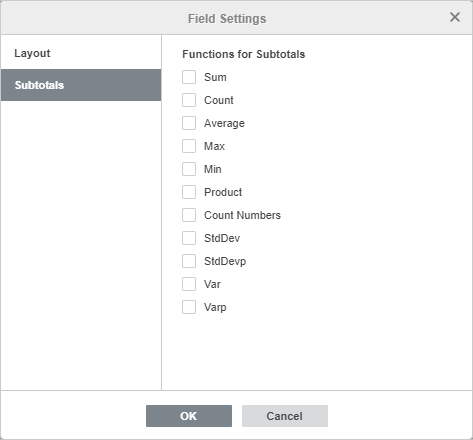
Kartica Subtotals omogućava da izaberete Functions for Subtotals. Označite potrebne funkcije na listi: Sum, Count, Average, Max, Min, Product, Count Numbers, StdDev, StdDevp, Var, Varp.
Podešavanja polja Values
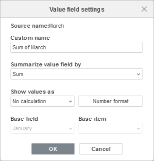
- Opcija Source name omogućava da vidite naziv polja koji odgovara zaglavlju kolone iz izvornog skupa podataka.
- Opcija Custom name omogućava da promenite naziv izabranog polja prikazan u pivot tabeli.
- Opcija Summarize value field by omogućava da izaberete funkciju koja se koristi za izračunavanje zbirne vrednosti za sve vrednosti iz ovog polja. Podrazumevano, Sum se koristi za numeričke vrednosti, a Count se koristi za tekstualne vrednosti. Dostupne funkcije su Sum, Count, Average, Max, Min, Product, Count Numbers, StdDev, StdDevp, Var, Varp.
- Opcija Show values as omogućava da prikažete trenutne prilagođene proračune umesto dodavanja formule i kreiranja izračunatog polja. No calculation je podrazumevana opcija koja prikazuje stvarnu vrednost u polju. Ostale opcije proračuna: % of grand total, % of column total, % of row total, % of, % of parent row total, % of parent column total, % of parent total, Difference from, % difference from, Running total in, % running total in, Rank smallest to largest, Rank largest to smallest, Index. Koristite Base field i Base item kada su ove opcije dostupne za proračun koji ste izabrali (% of, % of parent total, Difference from, % difference from, Running total in, % running total in).
- Opcija Number format omogućava da izaberete potreban format broja za polje vrednosti. Kliknite na ovo dugme, izaberite željeni format sa liste Category, a zatim kliknite na OK kada završite. Da biste saznali više o formatima brojeva, pogledajte sledeći članak.
Grupisanje i razgrupisanje podataka
Podaci u pivot tabelama mogu se grupisati prema prilagođenim zahtevima. Grupisanje je dostupno za datume i osnovne brojeve.
Grupisanje datuma
Da biste grupisali datume, kreirajte pivot tabelu koja uključuje skup potrebnih datuma. Kliknite desnim tasterom miša na bilo koju ćeliju u pivot tabeli koja sadrži datum, izaberite opciju Group u iskačućem meniju i podesite potrebne parametre u otvorenom prozoru.
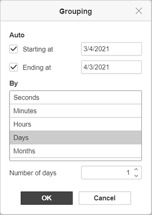
- Starting at - podrazumevano je izabran prvi datum u izvornim podacima. Da biste ga promenili, unesite potrebni datum u ovo polje. Deaktivirajte ovo polje da biste ignorisali početnu tačku.
- Ending at - podrazumevano je izabran poslednji datum u izvornim podacima. Da biste ga promenili, unesite potrebni datum u ovo polje. Deaktivirajte ovo polje da biste ignorisali krajnju tačku.
- By - opcije Seconds, Minutes i Hours grupišu podatke prema vremenu navedenom u izvornim podacima. Opcija Months uklanja dane i ostavlja samo mesece. Opcija Quarters radi po uslovu: četiri meseca čine jedan kvartal, čime se dobijaju Qtr1, Qtr2 itd. Opcija Years grupiše datume po godinama navedenim u izvornim podacima. Kombinujte opcije da biste postigli željeni rezultat.
- Number of days - podesite potrebnu vrednost da biste odredili opseg datuma.
- Kliknite na OK kada završite.
Grupisanje brojeva
Da biste grupisali brojeve, kreirajte pivot tabelu koja uključuje skup potrebnih brojeva. Kliknite desnim tasterom miša na bilo koju ćeliju u pivot tabeli koja sadrži broj, izaberite opciju Group u iskačućem meniju i podesite potrebne parametre u otvorenom prozoru.
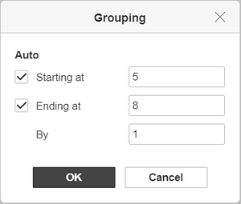
- Starting at - podrazumevano je izabran najmanji broj u izvornim podacima. Da biste ga promenili, unesite potrebni broj u ovo polje. Deaktivirajte ovo polje da biste ignorisali najmanji broj.
- Ending at - podrazumevano je izabran najveći broj u izvornim podacima. Da biste ga promenili, unesite potrebni broj u ovo polje. Deaktivirajte ovo polje da biste ignorisali najveći broj.
- By - podesite potreban interval za grupisanje brojeva. Npr., „2” će grupisati skup brojeva od 1 do 10 kao „1-2”, „3-4” itd.
- Kliknite na OK kada završite.
Razgrupisanje podataka
Da biste razgrupisali prethodno grupisane podatke,
- kliknite desnim tasterom miša na bilo koju ćeliju koja se nalazi u grupi,
- izaberite opciju Ungroup u kontekstnom meniju.
Promena izgleda pivot tabela
Možete koristiti opcije dostupne na gornjoj alatnoj traci da biste prilagodili način prikaza pivot tabele. Ove opcije se primenjuju na celu pivot tabelu.
Mišem izaberite najmanje jednu ćeliju unutar pivot tabele da biste aktivirali alate za uređivanje na gornjoj alatnoj traci.
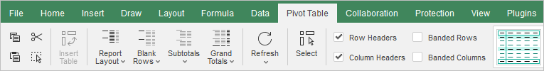
-
Padajuća lista Report Layout omogućava da izaberete potreban raspored za vašu pivot tabelu:
- Show in Compact Form - omogućava prikaz stavki iz različitih polja odeljka Rows u jednoj koloni.
- Show in Outline Form - omogućava da prikažete pivot tabelu u klasičnom stilu pivot tabela. Prikazuje jednu kolonu za svako polje i obezbeđuje prostor za zaglavlja polja. Takođe omogućava prikaz međuzbirova na vrhu grupa.
- Show in Tabular Form – omogućava prikaz pivot tabele u tradicionalnom tabelarnom formatu. Prikazuje jednu kolonu za svako polje i obezbeđuje prostor za zaglavlja polja.
- Repeat All Item Labels – omogućava vizuelno grupisanje redova ili kolona ako imate više polja u tabularnom prikazu.
- Don't Repeat All Item Labels – omogućava skrivanje oznaka stavki ako imate više polja u tabularnom prikazu.
-
Padajuća lista Blank Rows omogućava da izaberete da li želite da prikažete prazne redove nakon stavki:
- Insert Blank Line after Each Item – omogućava dodavanje praznih redova nakon stavki.
- Remove Blank Line after Each Item – omogućava uklanjanje dodatih praznih redova.
-
Padajuća lista Subtotals omogućava da izaberete da li želite da prikažete međuzbirove u pivot tabeli:
- Don't Show Subtotals – omogućava skrivanje međuzbirova za sve stavke.
- Show all Subtotals at Bottom of Group – omogućava prikaz međuzbirova ispod redova za koje se izračunavaju međuzbirovi.
- Show all Subtotals at Top of Group – omogućava prikaz međuzbirova iznad redova za koje se izračunavaju međuzbirovi.
-
Padajuća lista Grand Totals omogućava da izaberete da li želite da prikažete ukupne zbirove u pivot tabeli:
- Off for Rows and Columns – omogućava skrivanje ukupnih zbirova za redove i kolone.
- On for Rows and Columns – omogućava prikaz ukupnih zbirova za redove i kolone.
- On for Rows Only – omogućava prikaz ukupnih zbirova samo za redove.
- On for Columns Only – omogućava prikaz ukupnih zbirova samo za kolone.
Napomena: slična podešavanja su takođe dostupna u prozoru naprednih podešavanja pivot tabele u odeljku Grand Totals na kartici Name and Layout.
Dugme Select omogućava izbor cele pivot tabele.
Ako promenite podatke u izvornom skupu podataka, izaberite pivot tabelu i kliknite na dugme Refresh da biste ažurirali pivot tabelu.
Proširivanje ili skupljanje polja
Da biste proširili ili skupili detalje podataka, kliknite desnim tasterom miša na polje da biste otvorili kontekstni meni, izaberite stavku Expand/Collapse, a zatim izaberite potrebnu opciju:
- Expand – za prikaz detalja za trenutno izabranu stavku.
- Collapse – za sakrivanje detalja za trenutno izabranu stavku.
- Expand Entire Field – za prikaz detalja za sve stavke u polju. Slično podešavanje je dostupno i na gornjoj alatnoj traci.
- Collapse Entire Field – za sakrivanje detalja za sve stavke u polju. Slično podešavanje je dostupno i na gornjoj alatnoj traci.
Grupe su skrivene iza ikona plus/minus. Takođe možete proširivati/sakupljati polja dvostrukim klikom na zaglavlja pivot tabele.
Opcija Expand, kada je izabrano poslednje polje redova ili kolona, otvara dijalog prozor za dodavanje novog polja u red ili kolonu. Izaberite potrebno polje i kliknite na OK.
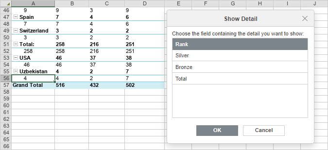
Promena stila pivot tabela
Možete promeniti izgled pivot tabela u radnom listu koristeći alate za uređivanje stilova dostupne na gornjoj alatnoj traci.
Mišem izaberite najmanje jednu ćeliju unutar pivot tabele da biste aktivirali alate za uređivanje na gornjoj alatnoj traci.
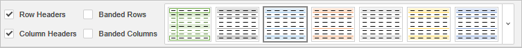
Opcije za redove i kolone omogućavaju da naglasite određene redove/kolone primenom posebnog formatiranja ili da istaknete različite redove/kolone različitim bojama pozadine radi jasnijeg razlikovanja. Dostupne su sledeće opcije:
- Row Headers – omogućava isticanje zaglavlja redova posebnim formatiranjem.
- Column Headers – omogućava isticanje zaglavlja kolona posebnim formatiranjem.
- Banded Rows – omogućava naizmenično menjanje boje pozadine neparnih i parnih redova.
- Banded Columns – omogućava naizmenično menjanje boje pozadine neparnih i parnih kolona.
Lista šablona omogućava vam da izaberete jedan od unapred definisanih stilova pivot tabela. Svaki šablon kombinuje određene parametre formatiranja, kao što su boja pozadine, stil ivica, naizmenično bojenje redova/kolona itd. U zavisnosti od izabranih opcija za redove i kolone, skup šablona će se prikazivati drugačije. Na primer, ako ste označili opcije Row Headers i Banded Columns, vidljivi deo liste šablona će uključivati šablone sa istaknutim zaglavljima redova i uključenim naizmeničnim kolonama, ali možete proširiti kompletnu listu klikom na strelicu kako biste videli sve dostupne šablone.
Filtriranje, sortiranje i dodavanje sekača (slicers) u pivot tabele
Možete filtrirati pivot tabele prema oznakama ili vrednostima i koristiti dodatne parametre sortiranja.
Filtriranje
Kliknite na padajuću strelicu u Row Labels ili Column Labels delu pivot tabele. Otvoriće se lista opcija Filter:
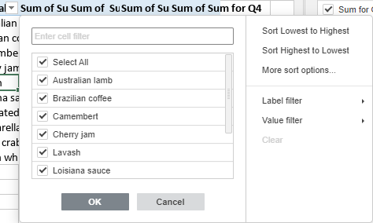
Podesite parametre filtera. Možete nastaviti na jedan od sledećih načina: izabrati podatke za prikaz ili filtrirati podatke prema određenim kriterijumima.
-
Izaberite podatke za prikaz
Odznačite polja pored podataka koje želite da sakrijete. Radi vaše pogodnosti, svi podaci u listi opcija Filter su sortirani rastućim redosledom.
Napomena: polje za potvrdu (blank) odgovara praznim ćelijama. Dostupno je ako izabrani opseg ćelija sadrži bar jednu praznu ćeliju.
Da biste olakšali proces, koristite polje za pretragu na vrhu. Unesite upit, u celosti ili delimično – vrednosti koje sadrže ove karaktere biće prikazane u listi ispod. Sledeće dve opcije će takođe biti dostupne:
- Select All Search Results – podrazumevano je uključena. Omogućava izbor svih vrednosti koje odgovaraju vašem upitu u listi.
- Add current selection to filter – ako označite ovu opciju, izabrane vrednosti neće biti skrivene kada primenite filter.
Nakon što izaberete sve potrebne podatke, kliknite na dugme OK u listi opcija Filter da biste primenili filter.
-
Filtriranje podataka prema određenim kriterijumima
Možete izabrati opciju Label filter ili Value filter sa desne strane liste opcija Filter, a zatim izabrati jednu od opcija iz podmenija:
-
Za Label filter dostupne su sledeće opcije:
- Za tekst: Equals..., Does not equal..., Begins with..., Does not begin with..., Ends with..., Does not end with..., Contains..., Does not contain...
- Za brojeve: Greater than..., Greater than or equal to..., Less than..., Less than or equal to..., Between, Not between.
- Za Value filter dostupne su sledeće opcije: Equals..., Does not equal..., Greater than..., Greater than or equal to..., Less than..., Less than or equal to..., Between, Not between, Top 10.
Nakon što izaberete jednu od gore navedenih opcija (osim Top 10), otvoriće se prozor Label/Value Filter. Odgovarajuće polje i kriterijum biće izabrani u prvoj i drugoj padajućoj listi. Unesite potrebnu vrednost u polje sa desne strane.
Kliknite na OK da biste primenili filter.
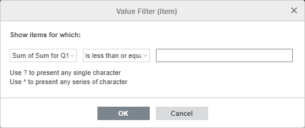
Ako izaberete opciju Top 10 iz liste opcija Value filter, otvoriće se novi prozor:
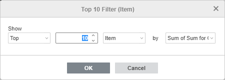
Prva padajuća lista omogućava izbor da li želite da prikažete najveće (Top) ili najmanje (Bottom) vrednosti. Drugo polje omogućava da odredite koliko stavki sa liste ili koji procenat ukupnog broja stavki želite da prikažete (možete uneti broj od 1 do 500). Treća padajuća lista omogućava izbor jedinica mere: Item, Percent ili Sum. Četvrta padajuća lista prikazuje naziv izabranog polja. Kada podesite potrebne parametre, kliknite na OK da biste primenili filter.
-
Za Label filter dostupne su sledeće opcije:
Dugme Filter pojaviće se u Row Labels ili Column Labels delu pivot tabele. To znači da je filter primenjen.
Sortiranje
Možete sortirati podatke pivot tabele koristeći opcije sort. Kliknite na padajuću strelicu u Row Labels ili Column Labels delu pivot tabele, a zatim izaberite opciju Sort Lowest to Highest ili Sort Highest to Lowest iz podmenija.
Opcija More Sort Options omogućava otvaranje prozora Sort u kojem možete izabrati potreban redosled sortiranja – Ascending ili Descending – i zatim izabrati određeno polje po kojem želite da sortirate.
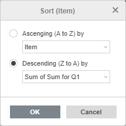
Dodavanje sekača (slicers)
Možete dodati sekače radi lakšeg filtriranja podataka tako što ćete prikazati samo ono što je potrebno. Da biste saznali više o sekačima, pročitajte vodič za kreiranje sekača.
Podešavanje naprednih opcija pivot tabele
Da biste promenili napredna podešavanja pivot tabele, koristite vezu Show advanced settings na desnoj bočnoj traci. Otvoriće se prozor „Pivot Table - Advanced Settings“:
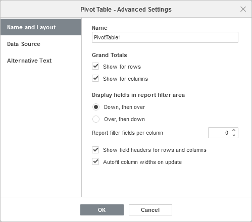
Kartica Name and Layout omogućava promenu opštih svojstava pivot tabele.
- Opcija Name omogućava promenu naziva pivot tabele.
-
Odeljak Grand Totals omogućava izbor da li želite da prikažete ukupne zbirove u pivot tabeli. Opcije Show for rows i Show for columns su podrazumevano označene. Možete odznačiti jednu od njih ili obe kako biste sakrili odgovarajuće ukupne zbirove iz pivot tabele.
Napomena: slična podešavanja su dostupna i na gornjoj alatnoj traci u meniju Grand Totals.
-
Odeljak Display fields in report filter area omogućava podešavanje filtera izveštaja koji se pojavljuju kada dodate polja u odeljak Filters:
- Opcija Down, then over koristi se za raspored po kolonama. Omogućava prikaz filtera izveštaja preko kolona.
- Opcija Over, then down koristi se za raspored po redovima. Omogućava prikaz filtera izveštaja preko redova.
- Opcija Report filter fields per column omogućava izbor broja filtera koji će se prikazivati u svakoj koloni. Podrazumevana vrednost je 0. Možete postaviti željenu numeričku vrednost.
- Opcija Show field headers for rows and columns omogućava izbor da li želite da prikažete zaglavlja polja u pivot tabeli. Opcija je podrazumevano uključena. Odznačite je da biste sakrili zaglavlja polja iz pivot tabele.
- Opcija Autofit column widths on update omogućava uključivanje/isključivanje automatskog prilagođavanja širine kolona. Opcija je podrazumevano uključena.
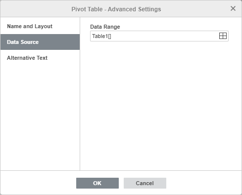
Kartica Data Source omogućava promenu podataka koje želite da koristite za kreiranje pivot tabele.
Proverite izabrani Data Range i po potrebi ga izmenite. Da biste to uradili, kliknite na ikonu .
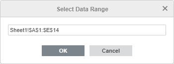
U prozoru Select Data Range unesite potreban opseg podataka u sledećem formatu: Sheet1!$A$1:$E$10. Takođe možete izabrati potreban opseg ćelija na listu pomoću miša. Kada završite, kliknite na OK.
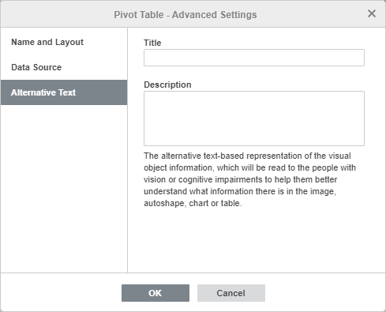
Kartica Alternative Text omogućava definisanje Title i Description vrednosti koje će biti pročitane osobama sa oštećenjem vida ili kognitivnim poteškoćama kako bi im se olakšalo razumevanje informacija koje pivot tabela sadrži.
Brisanje pivot tabele
Da biste obrisali pivot tabelu,
- Izaberite celu pivot tabelu pomoću dugmeta Select na gornjoj alatnoj traci.
- Pritisnite taster Delete.
Izračunate stavke
Izračunate stavke koriste se za osnovne proračune između različitih stavki unutar jednog polja.
Da biste dodali izračunatu stavku:
- Izaberite potrebno polje.
- Idite na karticu Pivot Table i kliknite na dugme Calculated Items na gornjoj alatnoj traci.
-
Unesite Item Name, koji će kasnije biti prikazan kao naziv polja u pivot tabeli.
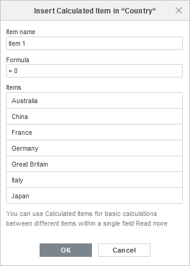
- Izmenite polje Formula unosom potrebnih polja sa donje liste ili klikom na dugme plus sa njihove desne strane, i unosom potrebnih matematičkih simbola, npr. „+“ ili „-“.
-
Kliknite na OK. Za dodatno upravljanje kreiranim izračunatim stavkama, koristite odgovarajuća dugmad na vrhu prozora: dodavanje nove, dupliranje, izmena ili brisanje trenutno izabrane stavke.
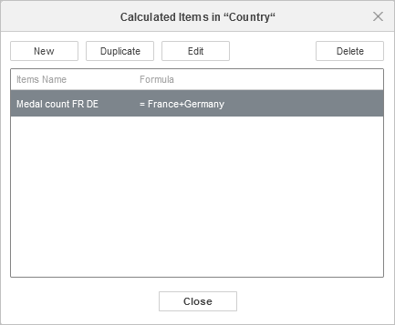